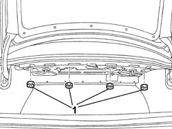
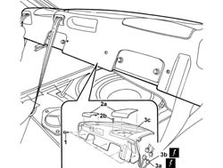

7040H80 REAR PARCEL SHELF - R.R.
- Path
- Procedures > 70 FITTINGS > 7040 BODY INTERIOR UPHOLSTERY AND TRIM > 7040H ROOF PANEL AND PILLAR LINING > 7040H80 REAR PARCEL SHELF - R.R.
- Kind
- repair procedure (removal / refitting; the operation number is the code)
- Applies to
- all engines; all production periods
- Interactive page
- https://sloeber94.github.io/elrnDB-lThss/en/#/458487
Applies to: all engines; all production periods
 Removing
Removing
 Refitting
Refitting- Disconnect the negative battery terminal.
See in Op. 7050A20 Single rear seat cushion - R.R.
See in Op. 7050A19 REAR SEAT BACKREST - R.R.
See in Op. 7040H46 Left or right rear pillar upper trim (one) - R.R.
See in Op. 7040B21 Luggage compartment upper TRIM - R.R.
1. Working in the luggage compartment, undo the nuts fixing the rear parcel shelf.

Applies to: all engines; all production periods
- Move into the passenger compartment.
1. Undo the front bolts.
2. Release the grilles (2a) for the rear speakers and undo the bolts (2b) underneath.
3. Disconnect the electrical connectors (3a) and (3b) and remove the rear parcel shelf (3c).
 | Description | Connector |
|---|---|---|
3a | Rear/blind bridge coupling | D052 |
| Description | Connector |
|---|---|---|
3b | Additional rear light (third brake light) | F040 |

Applies to: all engines; all production periods
Refitting
Removing1. Connect the electrical connectors (1a) and (1b) and place the rear parcel shelf (1c) in position.
| Description | Connector |
|---|---|---|
1a | Rear/blind bridge coupling | D052 |
| Description | Connector |
|---|---|---|
1b | Additional rear light (third brake light) | F040 |
2. Tighten the bolts (2a) and fit the rear speaker grilles (2b) in place.
3. Tighten the front bolts.
Applies to: all engines; all production periods
- Working in the luggage compartment, tighten the nuts fixing the rear parcel shelf.
See in Op. 7040B21 Luggage compartment upper TRIM - R.R.
See in Op. 7040H36 CENTRE PILLAR TRIM LOWER ELEMENT (one), left or right - R.R.
See in Op. 7050A19 REAR SEAT BACKREST - R.R.
See in Op. 7050A20 Single rear seat cushion - R.R.
- Connect the negative battery terminal.
Topics linked from this page (5)
- 7040B21 Luggage compartment upper TRIM - R.R.
- 7040H36 CENTRE PILLAR TRIM LOWER ELEMENT (one), left or right - R.R.
- 7040H46 Left or right rear pillar upper trim (one) - R.R.
- 7050A19 REAR SEAT BACKREST - R.R.
- 7050A20 Single rear seat cushion - R.R.
Topics that link to this page (9)
- 5505C41 PASSENGER COMPARTMENT built in WIRING - R.R.
- 5570T98 REAR SPEAKER (one), lh or rh - r.r.
- 5580E75 PASSIVE ENTRY AERIAL on rearscreen base crossmember - R.R.
- 7025B10 Boot lid - Realignment
- 7025B22 Boot LID HINGES (one), left or right - R.R. with lid removed
- 7035B14 Rearscreen (bonded) GLASS - R.R. for Replacement - Includes cleaning housing in bodyshell
- 7040H90 Rear parcel shelf complete with third brake light and electric sun blind - R.R.
- 7065B08 Rear seat belt (one) with pretensioner on reel, left or right - R.R.
- 7065B18 Centre rear SEAT BELT - R.R.